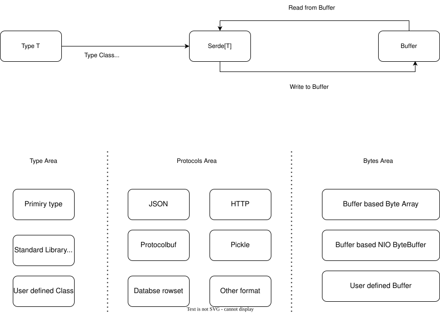

Serde 框架
Serde 是 otavia 基于 Buffer 的通用序列化/反序列化框架。它为所有序列化工具提供统一接口，设计上与 otavia 的 buffer 管理系统高效协作。

设计动机
目前 Scala 生态中大多数序列化框架都序列化到 java.nio.ByteBuffer 或 Array[Byte]。这不能与 otavia 的 Buffer 系统高效工作 — 需要额外的内存拷贝，也不容易利用内存池。
Serde[T] 使用 Buffer 作为序列化目标，实现：
- 与
AdaptiveBuffer的零拷贝操作 - 直接利用内存池
- 灵活的 Buffer 实现（堆、直接、基于文件）
Serde 接口
trait Serde[T] {
def serialize(output: Buffer, value: T): Unit
def deserialize(input: Buffer): T
}
支持的格式
JSON
使用 Serde[?] 接口的 JSON 序列化/反序列化。
Protocol Buffers
使用高效二进制编码直接序列化到/从 Buffer 的 Protocol Buffers 序列化/反序列化。
与 Channel Pipeline 集成
Serde 自然地与 codec 模块的 Message2ByteEncoder 和 Byte2MessageDecoder 集成：
class MyEncoder(serde: Serde[MyMessage]) extends Message2ByteEncoder[MyMessage] {
override protected def encode(ctx: ChannelHandlerContext, msg: MyMessage, out: AdaptiveBuffer): Unit = {
serde.serialize(out, msg)
}
}
class MyDecoder(serde: Serde[MyMessage]) extends Byte2MessageDecoder[MyMessage] {
override protected def decode(ctx: ChannelHandlerContext, input: AdaptiveBuffer): MyMessage = {
serde.deserialize(input)
}
}
这实现了 Channel Pipeline 中零拷贝的消息序列化，数据在网络和 Actor 的消息类型之间直接流动。
In this article